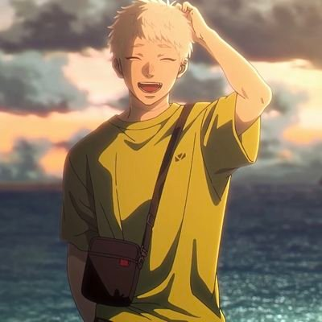
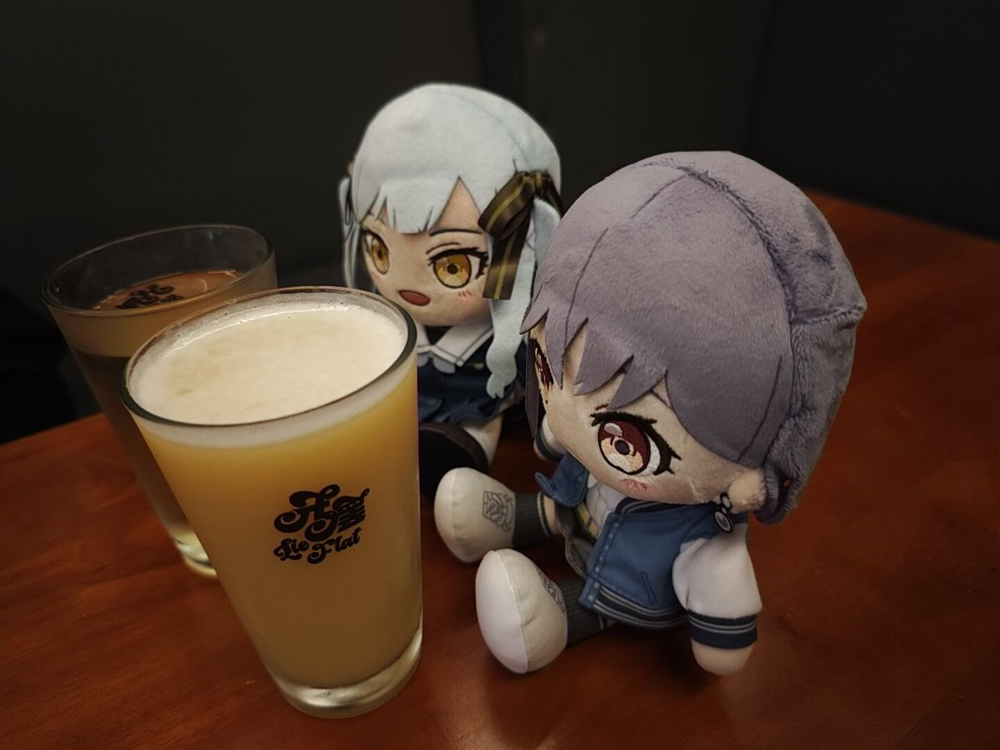
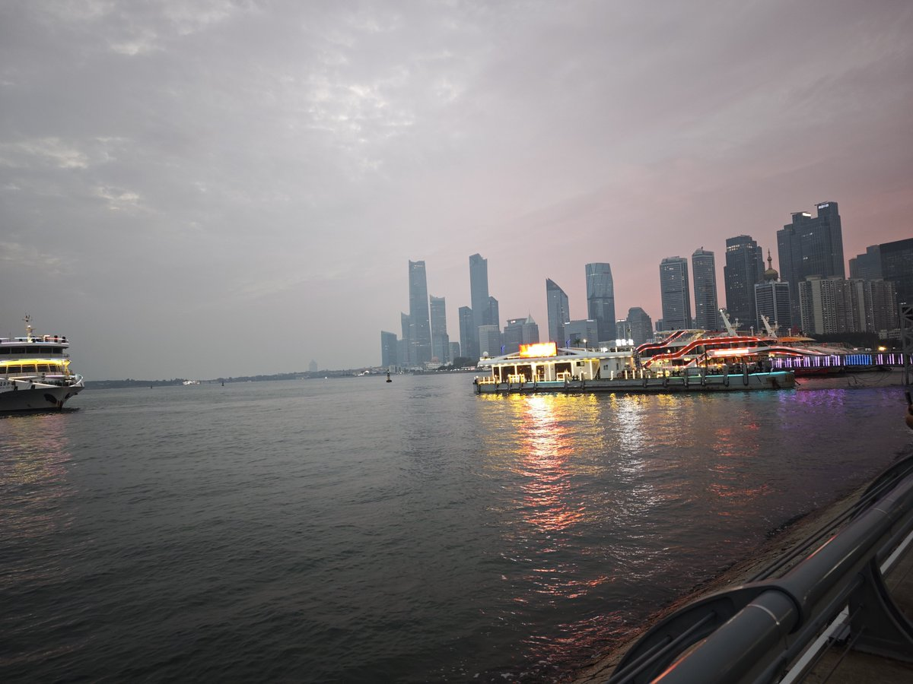
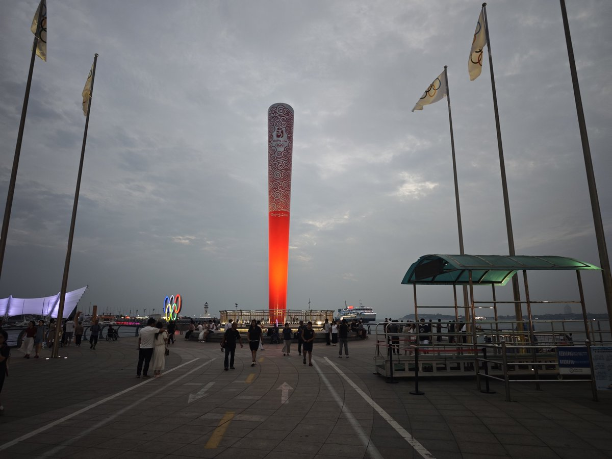

穗_🌾
@Sui_aini
关于我来青岛的第三日，repo、
和 @RRRRRlpon 见面了！本来计划着等她寒假回国再面基的，没想到她也在青岛，没想到可以在出国前见上一次，还好我请了一天假，凑了三天假期，最后一天就留给青岛人吧。
从23年开始看我的推文，觉醒到了自己的性别认同，还是同好，真正注意到是在今年五月份吧，当时也只是互关，没有搭上话，也差不多就是前半个月，无意间加了好友，聊了很多说了很多，很内向很敏感很可爱的一位朋友（可爱是我对一个人最高的评价）。
今天我们一起去吃了太二酸菜鱼，一起去了小酒馆喝了酒，一起又去了海边逛了一圈。明明自己有些酒精过敏，还陪我去喝了酒，好感动。在路上一直担心摔倒，一直照看着对方。相处的很舒服，聊了一路，一些奇奇怪怪的话题。
总之，我还会来青岛的，祝你留学顺利。祝福你找到了新的生活，可以重新开始真是太好了。


